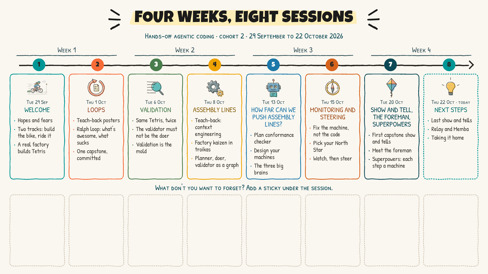

Welcome back
Day 8 of 8 · Thursday 22 October

Check in
“One word for how you're arriving at the last session?”

one word each · right to pass
The course ends today. We don't.
Today
Today
Show and tell: Fouad

What you built

How you built it

What you learned
about 6 min, then a question · next: Marek
Show and tell: Marek
What you built
How you built it
What you learned
about 6 min, then a question · next: Joel
Show and tell: Joel
What you built
How you built it
What you learned
about 6 min, then a question
Today
What's next?
“Where will you start, and what's in your way?”

groups of three · each of you is the client once · 9 min a round
Today
Relay: a working factory
“What would you take from this into your factory?”
demo

your questions
Today
Memba
“An experience report”

experience report
your questions
Today

September to now
“What has changed in your thinking?”
everyone in turn · right to pass
Thank you!

reactions on · a little party